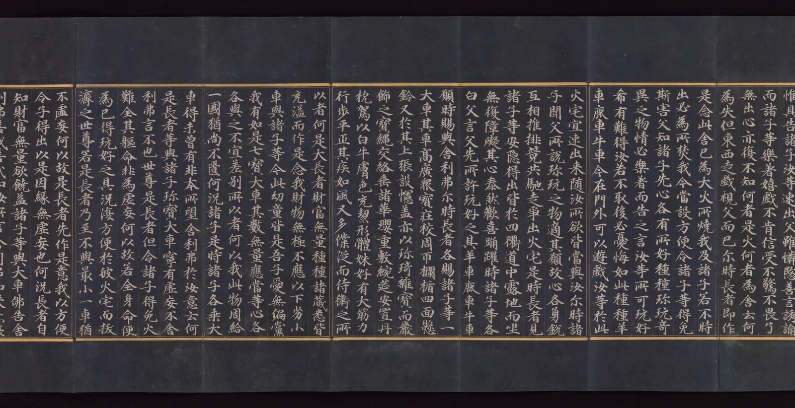

그리드
잘 만든 책을 넘기면 쪽마다 내용이 다른데도 어수선하지 않다. 글줄은 늘 같은 자리에서 시작하고, 그림은 글의 폭과 꼭 맞으며, 앞쪽의 글줄 뒤로 뒤쪽의 글줄이 정확히 겹쳐 비친다. 독자는 그 질서를 의식하지 않는다. 그런데 그 질서는 저절로 생기지 않는다. 글자 하나를 놓기 전에, 지면을 여백과 판면, 단과 거터, 줄과 모듈로 미리 나눠 둔 보이지 않는 격자가 있다. 이 장은 그 격자를 직접 세운다. 그리고 격자가 언제 도움이 되고 언제 깨야 하는지 본다.
- 여백, 판면, 단, 거터, 모듈, 흐름선, 기준선 격자를 구별하고 지면 위에서 찾는다.
- 여백을 바꿀 때 판면율과 한 쪽에 들어가는 글의 양이 어떻게 바뀌는지 계산한다.
- 판 데 그라프의 정전을 작도해 보고, 그것이 하나의 선택일 뿐 법칙이 아님을 안다.
- 단의 수와 거터 폭이 글줄 길이와 읽기에 주는 영향을 확인한다.
- 기준선 격자로 이웃한 단과 앞뒤 쪽의 글줄을 맞추고, 원고지와 사경의 정사각 격자가 한글 조판에서 갖는 의미와 한계를 안다.
- 격자를 일부러 깨는 경우와 실수로 어긋나는 경우를 구별한다.
보이지 않는 격자
서점 소식지 두 장을 나란히 놓았다고 해 보자. 하나는 글과 그림이 들어갈 자리가 생길 때마다 그때그때 놓았고, 다른 하나는 처음부터 지면을 몇 칸으로 나눠 두고 그 칸에 맞춰 놓았다. 두 장에 실린 내용이 같아도, 둘째 장이 훨씬 차분해 보인다. 무엇이 다른지 말로 하기는 어렵다. 선 하나 그어져 있지 않기 때문이다. 하지만 눈은 그어지지 않은 선을 본다. 제목의 왼쪽 끝, 사진의 왼쪽 끝, 본문의 왼쪽 끝이 한 수직선 위에 있으면, 눈은 그것을 하나의 질서로 묶는다. CompositionBook의 지면 구성 장에서 이 원리를 "보이지 않는 정렬선"으로 보았다. 그리드는 그 정렬선을 한 장 한 장 새로 긋지 않고, 미리 그어 두는 장치다.
그리드(Grid, 격자)는 지면을 가로세로의 칸으로 나눠, 글과 그림이 놓일 자리와 크기를 미리 정해 둔 설계도다. 그리드를 이루는 낱낱의 부분에는 이름이 있다. 그림 1에서 차례로 본다.
그리드는 세 가지 일을 한다. 첫째, 결정을 줄인다. 쪽마다 "이 사진을 얼마나 크게 놓을까"를 처음부터 고민하지 않고, "두 단 폭으로 할까 네 단 폭으로 할까" 가운데서 고르면 된다. 둘째, 쪽과 쪽을 잇는다. 책 한 권, 웹사이트의 여러 화면이 같은 격자를 나눠 가지면 독자는 넘길 때마다 새로 길을 찾지 않아도 된다. 셋째, 관계를 보여 준다. 같은 선에 맞춘 것들은 서로 관계있어 보이고, 격자에서 벗어난 것은 눈에 띈다. 셋째 성질이 뒤에서 볼 "격자를 깨는 법"의 바탕이다.
이 장은 바깥에서 안으로 들어간다. 먼저 종이와 판면의 관계(여백), 다음으로 판면을 나누는 세로 칸(단과 거터), 그다음 가로 칸(기준선과 모듈), 그리고 한글과 한자 문화권에 오래 있었던 다른 격자(원고지와 사경)를 본다. 마지막에 이 모든 것을 모아 안내 책자 「골목 산책」의 펼침면을 설계한다.
여백과 판면
그리드의 첫 결정은 종이 위에서 판면을 어디에 얼마나 크게 놓느냐다. 여백이 좁으면 한 쪽에 글이 많이 들어가지만 지면이 빽빽하고, 책을 쥔 엄지가 글을 가린다. 여백이 넓으면 지면이 조용해지지만 쪽수가 늘어 종이값이 오른다. 그리고 펼친 책에서는 여백 네 곳의 역할이 서로 다르다. 안쪽 여백은 제본되는 쪽이라 책이 둥글게 휘며 일부가 접혀 들어간다. 바깥 여백은 엄지가 잡는 자리다. 아래 여백은 쪽 번호가 놓이고, 눈은 판면의 기하학적 중심보다 조금 위를 지면의 중심으로 느끼기 때문에 흔히 위보다 넓게 둔다.
아래 시뮬레이터는 A5 책을 펼친 모습이다. 오른쪽 쪽 판면의 두 모서리를 끌어 여백을 바꾼다. 왼쪽 쪽은 거울처럼 따라 움직인다. 회색 줄은 글자 크기 3.5 mm, 줄 간격 5.5 mm로 짠 본문이다.
여백을 끌어 판면 정하기
여백을 줄이면 판면율은 빠르게 오른다. 사방 12.7 mm는 흔한 문서 프로그램에 들어 있는 "좁은 여백" 설정과 같은 값인데, A5에서 판면율 72.8%, 35자 × 33줄이다. 반대로 정전의 판면율은 44%, 28자 × 25줄이다. 같은 종이에 담기는 글의 양이 1.6배 넘게 차이 난다. 어느 쪽이 옳은지는 정해져 있지 않다. 사전이나 전화번호부처럼 많이 담아야 하는 책은 판면을 키우고, 시집이나 화집처럼 천천히 보는 책은 여백을 넓힌다. 여백은 낭비가 아니라 읽는 속도와 손의 자리를 정하는 설계다.
판 데 그라프의 정전
여백의 비례를 정하는 오래된 방법 가운데 가장 널리 알려진 것이 판 데 그라프의 정전(Van de Graaf canon)이다. 네덜란드의 J. A. 판 데 그라프가 1946년에 중세 필사본과 초기 인쇄본의 비례를 재구성해 발표한 작도법이고, 독일의 타이포그래퍼 얀 치홀트(Jan Tschichold, 1902–1974)가 책의 형태에 관한 글들에서 소개하며 널리 퍼졌다. 자와 컴퍼스만으로, 숫자 없이 그린다. 펼친 두 쪽에 각 쪽의 대각선과 펼침면 전체의 대각선을 긋고, 그 교점들을 이어 판면의 모서리를 찾는다. 결과는 쪽을 가로세로 9등분한 것과 같다. 판면은 안쪽에서 1/9, 위에서 1/9 떨어져 시작하고, 크기는 쪽의 6/9 × 6/9다.
작도의 성질을 직접 확인해 본다. 아래에서 판면의 안쪽 모서리를 대각선을 따라 움직이면, 판면이 커지고 작아지는 내내 두 대각선 위에 머문다. 정전은 이 길 위의 한 점, 1/9을 고른 것이다.
대각선 위의 판면
정전은 아름다운 비례를 만든다. 판면이 쪽과 닮은꼴이고, 펼친 두 판면 사이의 안쪽 여백 둘을 합하면 바깥 여백 하나와 같아 세 여백이 고르게 보인다. 하지만 정전에 관해 흔히 따라붙는 이야기, 곧 "중세의 모든 필사본과 구텐베르크가 이 비례를 썼다"는 말은 조심해서 들어야 한다. 정전은 일부 책을 재어 거꾸로 짜 맞춘 작도이고, 남아 있는 책들의 여백은 제본과 재단을 거치며 줄어들어 원래 비례를 정확히 알기 어렵다. 실제 필사본의 여백은 책마다 꽤 다르다. 황금비 이야기와 비슷하게(CompositionBook 비례 장), 정전은 "옛 책의 비밀"이 아니라 한 가지 좋은 출발점으로 보는 것이 맞다. 또 판면율 44%는 여백이 넓은 고급 단행본에는 어울리지만, 쪽수가 정해진 얇은 안내 책자나 잡지에는 사치에 가깝다.
단과 거터
판면을 정했으면 이제 세로로 나눈다. 단을 몇 개로 할지는 두 가지에 달렸다. 하나는 글줄 길이다. 판면 폭 전체를 한 줄로 쓰면 글줄이 길고, 단을 나누면 짧아진다. 글줄이 너무 길면 줄 끝에서 다음 줄 머리를 찾기 어렵고, 너무 짧으면 줄이 자주 바뀌어 낱말이 끊긴다. 어느 정도가 알맞은지는 6장에서 근거의 수준과 함께 따졌다. 다른 하나는 배치의 자유다. 단이 많을수록 그림과 글을 놓을 수 있는 폭의 종류가 늘어난다. 여섯 단 격자라면 한 단, 두 단, 세 단, 네 단, 여섯 단 폭을 모두 쓸 수 있다. 그래서 실무에서는 본문은 넓게 흐르게 두고, 격자는 그보다 잘게 나누는 경우가 많다. 격자의 단과 글의 단이 꼭 같을 필요는 없다.
거터는 단과 단 사이의 빈 띠다. 거터가 너무 좁으면 이웃한 단의 글줄이 하나로 이어져 보여 눈이 옆 단으로 건너가 버린다. 너무 넓으면 단들이 따로 노는 섬처럼 보인다. 흔한 출발점은 본문 글자 크기의 1~2배, 또는 한 줄 간격 정도다. 아래에서 단 수와 거터를 바꿔 본다. 글자는 실제 크기 3.5 mm에 해당하는 비율로 그렸다.
단 수와 거터
단을 늘릴수록 한 단의 글줄은 짧아지고, 어느 지점을 넘으면 어절 단위로 줄을 바꾸는 한글에서는 줄 끝이 크게 들쭉날쭉해진다. 양끝 맞추기를 하면 줄 끝은 반듯해지지만 대신 어절 사이가 벌어진다. 이 문제는 다음 장 정렬과 단락의 주제다. 여기서 기억할 것은 하나다. 단 폭은 글자 크기와 떼어서 정할 수 없다. 같은 60 mm 단이라도 글자가 3 mm면 20자, 5 mm면 12자다.
스위스의 격자, 그리고 한 격자에 여러 단
그리드를 하나의 체계로 정리한 사람들은 20세기 중반 스위스의 그래픽 디자이너들이다. 요제프 뮐러브로크만(Josef Müller-Brockmann, 1914–1996)은 『그래픽 디자인의 격자 체계』(Grid Systems in Graphic Design, 1981)에서 판면을 단과 줄로 나누고, 단 사이와 줄 사이의 간격을 글줄 간격에 맞추며, 사진과 글을 모두 그 칸에 놓는 방법을 단계별로 설명했다. 그가 강조한 것은 미적인 형식보다 객관성과 명료함이었다. 정보를 개인의 기분이 아니라 일관된 규칙으로 배치하면 읽는 사람이 내용에 집중할 수 있다는 생각이다.
같은 시기 카를 게르스트너(Karl Gerstner, 1930–2017)는 경제 잡지 『카피탈』(Capital)을 위해 한 격자 안에 여러 단 구성이 겹쳐 있는 격자를 만들었다. 판면 폭을 58단위로 나누고 거터를 2단위로 두면, 1단(58), 2단(28 + 2 + 28), 3단(18씩), 4단(13씩), 5단(10씩), 6단(8씩)이 모두 정수 단위로 떨어진다. 한 잡지 안에서 기사마다 다른 단 구성을 쓰면서도 모든 쪽이 같은 격자를 나눠 갖는다. 오늘날 웹 화면의 12단 격자(1, 2, 3, 4, 6, 12로 나누어떨어진다)도 같은 생각이다.
기준선 격자
세로 칸을 정했으면 가로 칸이다. 가로 방향의 가장 작은 단위는 글줄 간격이다. 본문 글줄이 놓이는 선, 곧 기준선을 판면 위에서 일정한 간격으로 미리 그어 두고 모든 글줄을 그 위에 앉히는 것이 기준선 격자다. 판면 높이를 이 간격의 정수 배로 정하면 맨 아래 줄이 판면 바닥에 꼭 맞는다.
기준선 격자가 없어도 한 단짜리 글은 잘 읽힌다. 문제는 단이 둘 이상이거나 소제목·그림·캡션이 끼어들 때 생긴다. 소제목은 본문보다 크고 위아래로 여유가 필요해서, 그 높이가 본문 줄 간격의 정수 배가 아니면 소제목 아래의 본문이 옆 단의 본문과 엇갈린다. 아래에서 왼쪽 단에 소제목을 하나 넣고, 소제목 위 간격을 바꿔 본다.
엇갈리는 두 단
기준선에 맞추면 소제목 위 간격은 원하는 값이 아니라 "다음 기준선까지"로 정해진다. 그래서 간격이 반 줄쯤 더 커지거나 작아지는 것을 감수해야 한다. 이것이 기준선 격자의 대가다. 그 대신 얻는 것은 세 가지다. 이웃한 단의 글줄이 나란하고, 펼친 두 쪽의 글줄 높이가 같으며, 종이 앞뒤의 글줄이 겹친다. 마지막 것을 뒤비침 맞춤(Backing up, Register)이라고 한다. 얇은 종이의 책을 빛에 비춰 보면 잘 짠 책은 앞뒤 글줄이 겹쳐 하나로 보인다.
모듈과 그림의 자리
단(세로 칸)과 기준선(가로 줄)이 생겼으면, 기준선 몇 줄을 묶어 가로 칸을 만든다. 단과 가로 칸이 만나는 사각형이 모듈이고, 모듈로 이루어진 격자를 모듈 그리드(Modular grid)라고 한다. 모듈 사이에는 거터처럼 빈 띠를 두는데, 그 높이를 본문 한 줄로 하면 그림 바로 아래에 캡션 한 줄이 앉고, 그림의 아래 끝과 옆 단 글줄의 기준선이 맞는다.
모듈 그리드의 계산은 단순하다. 판면이 31줄이고 가로 칸을 넷으로 나누면, 칸 사이 세 줄을 빼고 28줄이 남아 한 칸이 7줄이다. 셋으로 나누면 29줄을 셋으로 나눠야 하니 9줄씩 하고 2줄이 남는다. 남는 줄은 판면 맨 아래에 어정쩡한 빈자리로 남는다. 판면 줄 수는 칸 수와 함께 정해야 한다.
그림을 모듈에 놓을 때 하나 더 볼 것이 있다. 그림의 원화 크기다. 큰 원화를 작은 칸에 넣으면 많이 줄어들고, 줄어들수록 가는 선과 촘촘한 해칭이 뭉친다. DrawingBook의 선과 해칭 장에서 서윤은 A4 원화를 A5로 71% 줄여 실을 때 해칭의 흰 틈이 인쇄에서 막히지 않는 규칙을 세웠다. 아래에서 A4 원화 한 장을 모듈 위에 놓아 본다. 그림을 끌어 옮기고, 오른쪽 아래 손잡이로 크기를 바꾼다.
모듈에 그림 놓기
판면 폭 전체를 써도 A4 원화는 39%로 줄어든다. 해칭이 촘촘한 그림을 지키려면 그림을 판면 밖으로, 곧 쪽 전체로 키워야 한다. 재단선 밖까지 그림을 3 mm쯤 더 깔아 재단 오차에도 흰 테두리가 남지 않게 하는 것을 도련(Bleed)이라고 한다. A5 쪽에 도련을 더하면 154 × 216 mm이고, 세로 A4 원화를 여기에 맞추면 73%로 줄어든다. 3장의 규칙(71%)과 거의 같다. 판형을 고를 때부터 원화 크기와 이어져 있었던 셈이다.
원고지와 정사각 격자
서양 조판의 격자가 단과 줄의 격자라면, 한자 문화권에는 그보다 더 촘촘한 격자가 오래전부터 있었다. 글자 한 자가 한 칸인 격자다. 한자와 한글은 글자마다 폭이 거의 같은 네모꼴이라, 한 줄에 몇 자, 한 쪽에 몇 줄로 지면을 셀 수 있다. 학교에서 쓰던 원고지가 그 흔적이다. 200자 원고지는 한 줄 20칸 × 10줄, 400자 원고지는 20칸 × 20줄이다. 신문과 잡지에서 원고 분량을 "원고지 몇 매"로 세는 관습도 여기서 왔다.

사경과 목판본에서 이 격자는 선으로 실제로 그어졌다. 판면을 두르는 테두리(광곽)와 줄 사이의 선(계선)이다. 오늘날 일본어 조판에서는 판면을 아예 "한 줄 몇 자 × 몇 줄"로 정의하는 관습이 남아 있고, W3C의 『일본어 조판 요건』(JLREQ)도 판면을 이렇게 설명한다. 한국어에 대해서도 W3C의 『한국어 텍스트 레이아웃 및 타이포그래피 요건』(KLREQ)이 원고지식 칸 개념과 현대 한글 조판의 차이를 정리했다.
그런데 한글 조판이 정사각 격자에 꼭 맞기는 어렵다. 이유는 띄어쓰기다. 원고지에서는 띄어쓰기도 한 칸을 차지하지만, 인쇄된 책에서 낱말 사이 공백은 대개 글자 폭의 1/4~1/3이다. 공백이 좁은 것이 보기 좋기 때문이다. 여기에 문장부호와 숫자, 라틴 글자가 폭이 좁은 비례 글자로 끼어든다. 그러면 첫 공백 하나만 지나도 그 뒤의 글자는 칸에서 벗어난다. 아래에서 같은 문장을 원고지 방식과 현대 조판 방식으로 놓아 본다.
원고지에서 벗어나는 글자
그래서 현대 한글 조판의 정사각 격자는 "모든 글자가 칸에 들어간다"는 뜻이 아니라, 판면의 폭과 높이를 글자 크기와 줄 보내기의 정수 배로 잡는다는 뜻에 가깝다. 판면 폭이 33자라면 한글만 이어지는 줄은 정확히 33자가 들어가고, 공백과 문장부호가 섞인 줄은 양끝 맞추기로 남는 폭을 나눈다. 칸의 질서는 판면의 바깥 틀과 단의 폭에 남고, 줄 안의 글자 위치는 문장마다 달라진다. 세로쓰기 조판이나 표·목차·시간표처럼 글자를 세로로 줄 세워야 하는 곳에서는 지금도 칸 단위 배치가 쓰인다. 한글 글꼴이 수천 자를 같은 네모틀 안에서 설계하는 이유는 3장에서 보았다.
그리드를 깨는 법
격자를 세우는 이유가 질서라면, 격자를 깨는 이유는 강조다. 모든 것이 격자에 맞는 지면에서 단 하나가 격자를 벗어나면, 그것이 가장 먼저 눈에 띈다. 쪽 전체를 덮는 도련 사진, 여러 단을 가로지르는 큰 제목, 판면 바깥 여백으로 삐져나온 인용문이 그런 예다. 격자를 깨는 것이 효과를 내려면 두 가지가 필요하다. 깨는 것이 적어야 하고, 깬 것이 분명해야 한다.
격자를 깨는 방법은 몇 가지로 나뉜다. 바깥으로 깨기는 그림이나 색면을 판면 밖, 쪽 가장자리까지 키우는 것이다(도련). 가로질러 깨기는 큰 제목이나 그림이 여러 단을 건너 놓이는 것이고, 격자 안의 일이라 깨기라기보다 격자를 크게 쓰는 일에 가깝다. 기울여 깨기는 요소 하나를 비스듬히 놓아 모든 수평·수직선과 대비시키는 것이다. 그리고 비워서 깨기가 있다. 쪽 하나를 거의 비우고 글 한 줄만 놓으면, 꽉 찬 쪽들 사이에서 그 쪽이 쉼표가 된다. 동아시아 회화의 여백처럼, 비운 칸도 격자의 일부다.
반대로 격자가 처음부터 맞지 않는 내용도 있다. 아이들 그림책, 손으로 쓴 메모를 그대로 살린 잡지, 시처럼 줄의 모양 자체가 내용인 글은 엄격한 모듈이 오히려 방해가 될 수 있다. 1990년대의 일부 그래픽 디자이너들은 스위스식 격자를 일부러 부수고 글자를 겹치고 기울이는 지면으로 주목을 받았다. 그런 작업도 아무렇게나 놓은 것이 아니라, 격자를 알기에 어디서 어떻게 벗어날지 고른 것이다. 격자는 정답을 내는 장치가 아니라 결정을 미리 해 두는 장치이고, 미리 한 결정은 이유가 있으면 바꿀 수 있다.
펼침면 설계하기
마지막 시뮬레이터는 이 장의 도구를 모아 A5 안내 책자 한 펼침면을 설계한다. 왼쪽은 글 쪽, 오른쪽은 펜 드로잉 한 점이 도련으로 쪽 전체를 덮는 그림 쪽이다. 글 쪽의 판면 모서리 ①②를 끌어 여백을 정하고, 슬라이더로 줄 간격과 격자의 단·칸을 고른다. 글 쪽 아래 바깥 두 단에는 작은 크로키가 하나 들어간다. 오른쪽 아래에서 원고가 일곱 쪽에 들어가는지도 함께 계산한다.
「골목 산책」 펼침면 설계기
설계기에서 가장 자주 부딪히는 것은 정수다. 판면 높이가 줄 간격의 정수 배가 아니면 맨 아래에 남는 높이가 생기고, 줄 수가 칸 수로 나누어떨어지지 않으면 칸이 고르지 않다. 판면 폭이 글자 크기의 정수 배가 아니면 한글만 있는 줄에도 양끝에 미세한 틈이 생긴다. 좋은 그리드는 이 정수들이 서로 맞물리도록 몇 번이고 숫자를 되돌리며 찾은 결과다. 반대로 말하면, 그리드의 숫자가 깔끔하게 맞아떨어진다는 것은 누군가 그만큼 되돌려 봤다는 뜻이다.
서윤의 작업 노트
열두 점의 그림이 앨범처럼 흩어졌다
봄에 그린 펜 드로잉 열두 점과 책방 E 주인이 쓴 원고(공백 포함 약 5,200자)가 모였다. 「골목 산책」은 A5 16쪽 중철 책자다. 서윤은 회사에서 쓰던 문서 프로그램의 "좁은 여백"(사방 12.7 mm)을 그대로 두고, 글을 흘려 넣은 뒤 그림을 빈자리마다 끼워 넣었다. 그림은 들어갈 자리에 따라 손바닥만 해지기도 하고 쪽을 거의 채우기도 했다. 시안을 A4에 두 쪽씩 인쇄해 반으로 접어 보니 문제가 한꺼번에 보였다. 안쪽 글줄은 접힌 그늘로 휘어 들어갔고, 펼친 두 쪽의 글줄 높이가 서로 달랐으며, 쪽마다 그림 크기가 제각각이라 안내 책자보다 사진 앨범에 가까웠다.
한도경은 접은 시안을 빛에 비춰 보더니 말했다. "활판에서는 글자를 한 자도 넣기 전에 판부터 짠다. 판이 서면 쪽마다 고민할 일이 반으로 줄어." 서윤은 원고와 그림을 먼저 셌다. 그림 열두 점 가운데 해칭이 촘촘한 큰 그림이 아홉 점(서점 외관 두 점, 골목 계단, 서가 통로, 창가 정물, 소품, 주인, 단골손님들, 동네 풍경), 선으로만 그린 크로키가 세 점이다. DrawingBook 3장에서 해칭 규칙을 A4 원화의 71% 축소에 맞춰 세웠으니, 큰 그림을 판면 안에 넣으면(판면 폭 전체라도 39%) 그늘이 뭉친다. 큰 그림은 쪽 전체로 가야 했다. 16쪽에 큰 그림 아홉 점이면 표지(1쪽)와 뒤표지(16쪽)에 하나씩, 안쪽 일곱 펼침면에 하나씩이다. 펼침면마다 한쪽은 그림, 한쪽은 글이 된다.
다음은 글 쪽의 판이다. 처음에는 정전을 그려 보았다. 이 장의 모델로 계산하면 A5의 정전 판면은 98.7 × 140 mm, 28자 × 25줄로 쪽당 700칸이다. 글 쪽 일곱 개를 다 써도 4,900칸이라 원고 5,200자가 소제목도 없이 넘친다. 서윤은 본문 크기를 3.5 mm(14급, 약 9.9 pt), 줄 보내기를 5.5 mm(22치, 글자 크기의 157%)로 정하고 판면을 글자와 줄의 정수 배로 다시 잡았다. 폭 33자(115.5 mm), 높이 31줄(170.5 mm). 31줄은 7줄짜리 칸 넷과 칸 사이 한 줄 셋으로 나누어떨어진다. 폭은 거터를 한 자(3.5 mm)로 한 6단으로 나누었다. 쪽당 1,023칸, 일곱 쪽이면 7,161칸이다. 쪽마다 소제목에 3줄을 비우고 크로키 세 점의 자리(모듈 넷과 둘레의 거터)를 빼도 5,892칸이 남아, 원고가 700칸 가까운 여유를 두고 들어간다. 판면율은 63.4%로 정전(44.4%)과 좁은 여백(72.8%) 사이다.
여백은 위 16 mm, 아래 23.5 mm, 안쪽 14 mm, 바깥 18.5 mm다. 펼친 두 판면 사이는 안쪽 여백 둘을 더해 28 mm로 바깥보다 넓지만, 중철 책은 제본 쪽이 휘어 들어가니 실제로 보이는 폭은 더 좁다. 쪽 번호는 판면 맨 아래 기준선에서 두 줄(11 mm) 아래, 바깥 끝에 맞췄다. 그림 쪽은 홀수(오른쪽) 쪽에 두었다. 펼치면 오른쪽이 먼저 눈에 들어오고, DrawingBook에서 정해 둔 대로 서가 통로 그림이 3쪽에 온다. 도경은 인쇄한 판을 빛에 비춰 앞뒤 글줄이 겹치는 것을 확인하고 한마디 했다. "이제 그림이 쉴 자리가 생겼네."
115.5×170.5 mm
본문 · 줄 보내기3.5 mm / 5.5 mm
여백 위·아래·안·밖16/23.5/14/18.5
격자6단 × 4칸
핵심 정리
- 그리드는 지면을 여백·판면·단·거터·모듈·기준선으로 미리 나눈 설계도다. 결정을 줄이고, 쪽과 쪽을 잇고, 같은 선에 맞춘 것끼리 관계를 보여 준다.
- 여백은 판면율과 한 쪽에 담기는 글의 양을 정한다. A5에서 사방 12.7 mm는 판면율 약 73%, 정전은 44%다. 안쪽은 제본, 바깥은 엄지, 아래는 쪽 번호와 시각적 중심 때문에 역할이 다르다.
- 판 데 그라프의 정전은 대각선으로 작도하는 1:1:2:2 비례(쪽의 1/9 지점)다. 아름다운 출발점이지만, 옛 책들이 모두 따랐다는 근거는 약하고 얇은 책에는 여백이 사치일 수 있다.
- 단 폭은 글자 크기와 함께 정한다. 거터가 너무 좁으면 옆 단으로 눈이 건너간다. 격자는 잘게(6단, 12단) 나누고 본문은 그보다 넓은 단에 흘리는 경우가 많다.
- 기준선 격자는 모든 글줄을 같은 간격의 선에 앉혀 이웃한 단, 펼친 두 쪽, 종이 앞뒤의 글줄을 맞춘다. 판면 높이는 줄 보내기의 정수 배, 칸은 줄 수로 나누어떨어지게 정한다.
- 원고지와 사경은 글자 한 자가 한 칸인 정사각 격자다. 현대 한글 조판은 좁은 공백과 비례 글자 때문에 칸에 꼭 맞지 않고, 판면 크기를 글자의 정수 배로 잡는 데 그 질서가 남는다.
- 격자는 적게, 분명하게 깰 때 강조가 된다. 조금씩 어긋나면 실수처럼 보인다. 격자는 내용을 먼저 세고 짠다.
확인 퀴즈
1. A5 쪽(148 × 210 mm)에 판 데 그라프의 정전으로 판면을 잡았다. 바깥 여백과 판면율로 알맞은 것은?
2. 두 단짜리 소식지에서 왼쪽 단에만 소제목이 있는데, 소제목 아래부터 왼쪽 단의 글줄이 오른쪽 단의 글줄 사이에 떠 있다. 가장 알맞은 처방은?
3. 판면 높이가 31줄인 책에서 모듈 사이를 한 줄씩 비우고 가로 칸을 나누려 한다. 남는 줄 없이 나누어떨어지는 칸 수는?
4. 원고지에서는 글자가 세로로 반듯하게 줄을 서는데, 같은 글을 인쇄용으로 조판하면 둘째 어절부터 글자가 칸에서 벗어난다. 주된 까닭은?
출처와 글꼴
- Josef Müller-Brockmann, Grid Systems in Graphic Design / Raster Systeme für die visuelle Gestaltung, Niggli, 1981. (격자의 단계별 구성, 요약)
- Jan Tschichold, The Form of the Book: Essays on the Morality of Good Design, Hartley & Marks, 1991(독일어 원저 논문들은 1940~1970년대). 판 데 그라프·로사리보의 작도 소개(요약).
- J. A. van de Graaf(1946)의 정전 작도. 원문은 확인하지 못했고, 치홀트의 소개를 통해 요약했다.
- Karl Gerstner, Designing Programmes, 1964. 『카피탈』의 58단위 격자(요약).
- W3C, Requirements for Japanese Text Layout(JLREQ), W3C Group Note. 판면을 글자 수 × 줄 수로 정의하는 관습.
- W3C, Requirements for Hangul Text Layout and Typography(KLREQ), W3C Group Note.
- 그림 2: The Metropolitan Museum of Art, 「묘법연화경 제2권」(1994.207), 공공 도메인.
- 글꼴: Noto Serif KR, Noto Sans KR(Google·Adobe, SIL Open Font License 1.1). Google Fonts에서 불러온다.